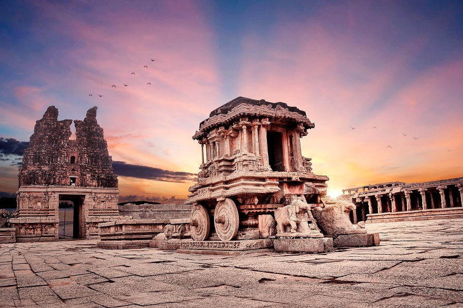
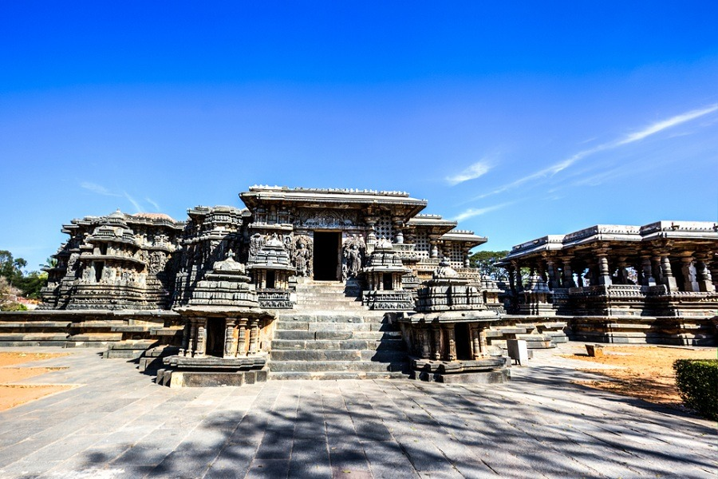
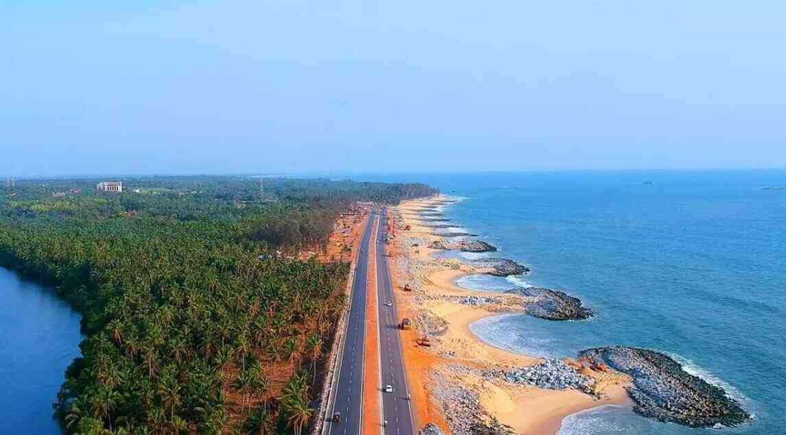

Top Destinations

Hampi, UNESCO World Heritage site

Belur & Halebidu
Temples of Chennakesava, & Hoyasaleshwara

Murudeshwar
second tallest Shiva statue in the world.

Mangalore
Arabian Sea surrounds it on one side and the Western Ghats on the other.